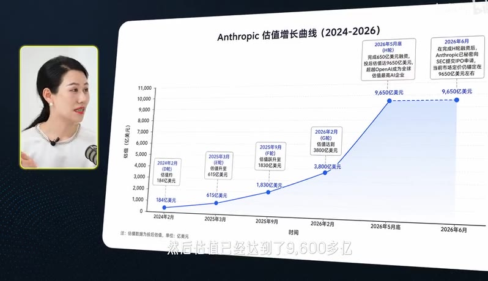
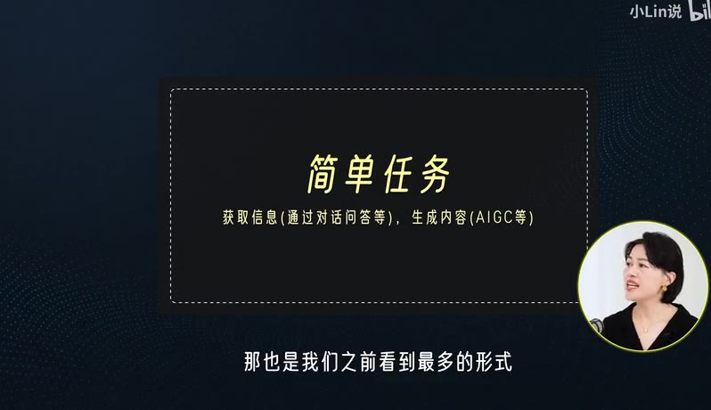
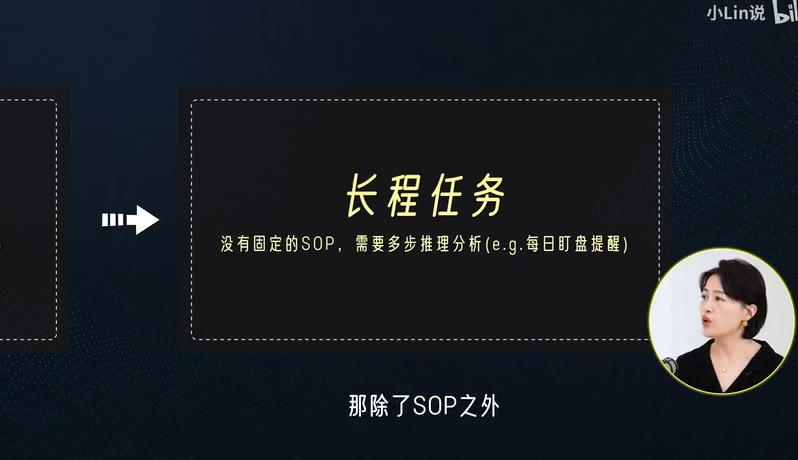
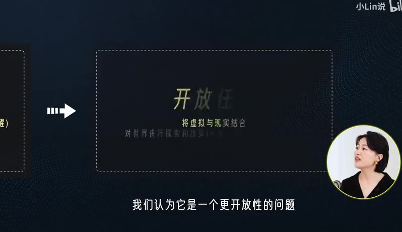

Anthropic估值暴涨背后，普通人有什么AI时代的红利？
时长 35:09 · 分辨率 852x480 · 生成于 2026-07-16 | 来源
ref/BV12kTp6tENs.mp4· 视频链接
概述
本期《灵光对话》探讨了AI从“你问我答”到“写代码做应用”的演进，重点分析了Coding Agent的商业价值、国内外大厂的布局路线，以及蚂蚁集团旗下灵光APP如何通过C端“Vibe Coding”（许愿编程）推动AI技术普惠化。嘉宾马静（蚂蚁集团灵光APP产品总监）分享了AI解决任务的四个层次、Anthropic估值反超OpenAI的原因，以及灵光APP在移动端构建应用生态的实践与愿景。
AI解决任务的四个层次
AI的商业价值体现在其解决真实问题的能力上，资本市场的热度反映了对AI解决复杂、长程问题的认可。
- 简单任务（问答与对话）：最常见的形式，如聊天机器人，用于获取信息和生成内容（AIGC）。
- 复杂任务（有SOP）：任务有标准操作流程（SOP），AI可逐步执行，更可控。Coding Agent 目前主要解决此类问题，能减少幻觉和不确定性。
- 长程任务（需推理）：没有固定SOP，需要AI结合大模型和Coding Agent进行自主推理，思考如何一步步解决复杂问题。
- 开放任务（虚实结合）：虚拟世界与现实世界的结合，如世界模型、机器人，将AI的“大脑”落地到“手和脚”，解决开放性问题。
资本市场动态：Anthropic为何反超OpenAI
- OpenAI：2026年3月融资估值约8500亿美元。
- Anthropic：已秘密向SEC提交IPO申请，完成H轮融资后估值达9650亿美元，反超OpenAI成为全球估值最高AI企业。其核心价值在于Coding Agent（Claude Code） 在B端企业（如金融、医疗）中能明确提高生产力，真正“能干活”。
Coding Agent 应用方向与国内外路线
1. Claude Code 的应用场景
- 核心收入：主要来自B端企业。
- 主要用户：程序员（实现Vibe Coding，让机器写代码）、金融分析师（财报分析）、医疗领域。
- 能力：从自然语言要求出发，自动写代码、Debug、上线部署，直接交付可用应用。
2. 国内大厂路线：以灵光APP为例
- 差异化定位：跳过PC端，直接聚焦C端移动端。类比中国从信用卡阶段直接跨越到移动支付，灵光认为中国移动手机普及率远高于PC，因此从手机端切入Coding Agent。
- 核心理念：Wish Coding（许愿编程）。用户只需说出想法（如“做一个电子瑜伽管理器”），即可在30秒内生成一个可立即使用的“闪应用”。
- 市场选择：中国B端SaaS市场与美国不同，中小企业支付意愿和占比相对较低。灵光认为C端驱动不仅能解决生活问题，也能低成本解决小微企业的工作问题。
灵光APP的生态与商业模式
1. 用户与内容生态
- 用户规模：已沉淀3000多万个闪应用。
- 热门应用类别：
- 日常工具：如情绪管理（可视化情绪解读）、拍照姿势指导。
- 文字游戏/互动内容：将悬疑小说转化为可交互的解谜游戏。
- 测试类：如性格测试（MBTI）。
- 财务类：家庭资产负债表管理。
- 知识科普：如用动物视角看世界。
- 社区（灵光圈）：用户可发布、浏览、修改他人的应用，形成类似开源社区的共创生态。
2. 商业模式与推广
- 当前阶段：上线半年，优先关注用户价值，解决真实问题。
- 商业化尝试：部分创作者已自发在社交媒体售卖自己制作的应用。灵光未来计划构建双边市场，连接内容供给与消费，设计可持续发展机制。
- 推广方向：面向所有C端用户，鼓励“AI原住民”（从十几岁到六十岁，无需懂代码，核心是有想法）进行创作。
3. 核心壁垒
- 内容资产沉淀：优质应用的积累。
- 基础设施领先：自然语言生成应用的能力，涉及基模、链路、产品优化等完整技术链，在移动端创建应用的体验全球领先。
对软件生态的影响与未来展望
- “消失的软件”：未来软件的核心壁垒不再是开发能力，而是解决的问题和积累的数据。
- K型分化：少数大厂做大众通用应用，大量长尾需求将由个人通过Coding Agent快速创建、用完即弃的个性化应用满足。
- 时间预期：这种生态变化会很快到来，得益于技术迭代速度和中国移动端使用深度。
- 最大卡点：让所有C端用户真正体验到Vibe Coding的魅力，让“许愿”成真。
关键术语速览
| 术语 | 解释 |
|---|---|
| Coding Agent | 能理解自然语言、自动编写、调试和部署代码的AI代理，像一个“超级程序员”。 |
| Vibe Coding | 一种编程方式，开发者只需描述想法，AI自动生成代码，强调“感觉”而非技术细节。 |
| Wish Coding | 灵光APP提出的概念，即“许愿编程”，用户说出愿望即可生成应用。 |
| 闪应用 | 灵光APP上用户通过一句话在30秒内生成的、可立即使用的轻量级应用。 |
| AI原住民 | 在AI工具环境下成长起来的一代创作者，核心能力是“有想法”，而非写代码。 |
| 灵光圈 | 灵光APP内的社区，用户可发布、分享、修改和消费闪应用。 |
附录：原始提取素材
语音全文转写（带时间戳）
[00:00–00:02]从落地真正实现商业价值的情况下[00:02–00:05]coding agent 它大概现在的应用是在什么方向[00:05–00:09]国内的大厂现在围绕着agent 一般是什么路线[00:09–00:11]那这个生态会产生一个什么样的影响[00:11–00:14]灵光在这里边 它的位置是什么[00:14–00:22]好 这里是灵光的全新视频播客栏目 灵光对话[00:22–00:23]我是今天的客座主持人小林[00:23–00:25]大家看见我坐在这儿应该就知道[00:25–00:27]我们今天会聊一些商业话题[00:27–00:31]你看哈 这个 OpenAI Anthropic 现在都在谋求上市[00:31–00:33]是直逼万亿美元[00:33–00:36]我估计现在应该已经没有人会怀疑 AI 的商业应用价值了[00:36–00:41]从之前是你问我答 到现在可以写代码做应用[00:41–00:44]对吧 今年也被称作是 agent 真正应用落地的元年[00:44–00:47]好 那 agent 来了 对整个商业社会意味着什么呢[00:47–00:50]这些大厂又会有什么新的玩法 新的模式[00:50–00:54]而我们普通人在这波浪潮里又能抓住什么机会呢[00:54–00:56]来 今天我们请到了这个领域的一位专业人士[00:56–01:00]蚂蚁集团灵光APP的产品总监马静 马总[01:00–01:02]哈喽 大家好 我是蚂蚁集团灵光APP的马静[01:02–01:04]今天我们就会来一起聊一下[01:04–01:08]当 AI 从原来的你问我答 到现在可以写代码做应用[01:08–01:09]对我们普通人来说意味着什么[01:09–01:12]马总 我想先跟您从资本市场开始聊一聊[01:12–01:15]因为我们现在看见硅谷圈的资本市场非常热[01:15–01:18]因为今年 Open AI 和 Anthropic 都要准备上市[01:18–01:21]Open AI 3 月份有一轮融资估值是 8500 多亿[01:21–01:24]而 Anthropic 现在已经递交了招股书[01:24–01:26]然后估值已经达到了 9600 多亿[01:26–01:28]也是第一次反超了 Open AI[01:28–01:29]我特别想知道从您的角度[01:30–01:32]就是 Anthropic 这个估值为什么会反超[01:32–01:33]它的价值到底在哪[01:33–01:36]我是觉得这个核心还是资本看到了 AI[01:36–01:37]到底能够解决什么真实的问题[01:37–01:39]在我们的定义里边[01:39–01:41]其实 AI 它在解决四个层次的问题[01:41–01:43]第一个层次应该是解决最简单的问题[01:43–01:46]那也是我们之前看到最多的形式[01:46–01:48]就是问答的形式对话的形式[01:48–01:50]第二个层次其实在解决相对复杂的问题[01:50–01:51]它其实是有 SOP 的[01:51–01:53]那我可以一步一步一步地去做[01:53–01:56]那其实这个也是现在 Coding Agent 在解决的问题[01:56–01:59]因为它能够解决很多幻觉和 AI 生成的[01:59–02:00]我不确定性的问题[02:00–02:03]我能够保证我在完成任务和解决问题的时候[02:03–02:04]它是更可控的[02:04–02:06]还是按照规则去执行[02:06–02:07]所以它其实复杂问题[02:07–02:09]它也是有一套 SOP 的[02:09–02:11]那第三层次的话[02:11–02:14]其实我们把它定义为一些长程问题[02:14–02:16]那除了 SOP 之外[02:16–02:18]其实是需要 AI 自己在做推理[02:18–02:19]去解决一些问题的[02:19–02:20]那这样的话[02:20–02:24]我可以通过整个大模型和 Coding Agent 的一个结合[02:24–02:26]让整个 Agent 自己去推理[02:26–02:29]自己去思考如何一步一步地去解决[02:29–02:30]一个相对复杂的问题[02:30–02:32]那这是第三个层次[02:32–02:33]我们定义为长程问题[02:33–02:34]那第四个问题[02:34–02:36]我们认为它是一个更开放性的问题[02:36–02:36]开放问题的话[02:36–02:40]它更多是一个虚拟世界和现实世界的结合[02:40–02:42]比如说我们现在看到的这个世界模型[02:42–02:44]或者是有很多机器人的问题[02:44–02:49]因为我们能够去把整个虚拟世界的思考和大脑[02:49–02:51]把它落地到手和脚当中[02:51–02:54]去解决我们开放世界的一个更开放性的问题[02:54–02:57]所以其实我们认为在 AI 解决问题的这四个层次当中[02:57–03:01]其实资本也是看到了 AI 现在可以解决更复杂[03:01–03:03]更长程的一些问题[03:03–03:05]真正能够去解放生产力[03:05–03:09]同时 AI 也能够去真正创造 GDP 当中的一部分[03:09–03:12]刚才马总感觉在我们梳理了一下[03:12–03:14]这个 AI 从大模型一直可能到最后[03:14–03:17]物理世界 AI 的这样一个链路[03:17–03:20]我们稍微把这个给观众也再展开讲一下[03:20–03:22]就是最开始是大模型[03:22–03:24]这一层现在已经基本是实现了[03:24–03:25]然后您刚说的第二层[03:25–03:26]就稍微附加一点的[03:26–03:27]根据一个 SOP[03:27–03:30]这个其实也是现在 AI 正在落地的一个阶段[03:30–03:31]对 然后第三阶段[03:31–03:32]您刚才说到了[03:32–03:34]因为 Coding Agent它会根据大模型[03:34–03:35]有一些理解能力[03:35–03:36]就是可以不完全按照 SOP[03:36–03:39]但是自己是做一些操作[03:39–03:41]对 这块我就还是以 Anthropic 为例[03:41–03:43]因为大家可能比较熟悉的[03:43–03:44]Anthropic 的大模型是 Claude[03:44–03:45]然后它其实还有一个[03:45–03:47]现在也是非常火[03:47–03:49]而且潜力很大的就是 Claude Code[03:49–03:51]我想您能不能给观众解释一下[03:51–03:52]就是 Claude Code[03:52–03:53]就刚才这些概念[03:53–03:55]它大概是一个什么样的关系[03:55–03:57]首先其实 Anthropic 这个公司[03:57–03:59]其实在中国的认知度早[03:59–04:00]其实没有 Open AI 这么高的[04:00–04:02]是因为 Open AI 推出了一个[04:02–04:04]最 C 端化的产品[04:04–04:05]它通过 Chat 的模式[04:05–04:06]通过聊天框的模式[04:06–04:09]让更多普通的人民群众[04:09–04:11]能够真正的去免费使用 AI[04:11–04:12]当然它后来也收费了[04:12–04:14]对 但对于 Anthropic 这个公司[04:14–04:17]它其实最早被推的一个核心的方向[04:17–04:18]就是基于 Coding[04:18–04:19]基于生产代码[04:19–04:20]生产的这种方式[04:20–04:23]去解决任务和解决问题[04:23–04:24]那 Claude 它更像是一个[04:24–04:26]Chainbox 的一个形式[04:26–04:27]一种聊天的形式[04:27–04:28]它也可以去解决一些[04:28–04:30]相对比较简单的问题[04:30–04:31]那在复杂问题的解决上[04:31–04:35]它更多的很难按照 Claude Code 的一样[04:35–04:37]完全像一个你真实的程序员[04:37–04:39]和助理在你身边一样[04:39–04:40]去帮你真正去写代码[04:40–04:41]帮你交付一个事情[04:41–04:43]那如果我只是通过一个[04:43–04:44]聊天框的形式[04:44–04:46]它更多可能会给我一些代码[04:46–04:46]那这些代码[04:46–04:48]我需要自己去上线和部署[04:48–04:49]那作为 Claude Code 的话[04:49–04:51]我只需要告诉它这个要求[04:51–04:53]那它就像一个程序员一样[04:53–04:54]它可以帮我写出来[04:54–04:56]同时能够帮我去 Debug[04:56–04:58]同时还能帮我上线部署[04:58–04:59]它直接就交付给我[04:59–05:00]我直接可以使用了[05:00–05:02]那这个其实也是 Claude Code[05:02–05:03]为什么现在在全球[05:03–05:05]受到很多B端企业[05:05–05:06]追捧的一个原因[05:06–05:10]因为它非常明确的能够去提高[05:10–05:11]像程序员的生产力[05:11–05:13]同时也在包括金融[05:13–05:14]医疗等领域[05:14–05:16]给很多B端的企业[05:16–05:17]提供了很多生产力的[05:17–05:18]真的能干活了[05:18–05:19]是的[05:19–05:19]光动嘴[05:19–05:20]真的能干活[05:20–05:23]我其实就是在看这个 Claude Code 的时候[05:23–05:24]一开始我觉得它可能离我们[05:24–05:25]普通人的生活其实还蛮远的[05:25–05:26]因为主要都是程序员在用[05:26–05:28]然后有一次我是看到[05:28–05:30]就真的是有一个人想让他编一个网页[05:30–05:32]就跟他说了非常简单的几句话[05:32–05:33]他就自己去网上搜集信息[05:33–05:35]把这个网页完全编出来了[05:35–05:36]那一刻我还是觉得挺[05:36–05:38]就是真的是挺震撼的[05:38–05:40]就像 Claude Code 的这种工具[05:40–05:42]它大概现在的应用是在什么方向[05:42–05:44]其实我们能够看到 Claude Code[05:44–05:46]它核心的收入还是来自于弊端[05:47–05:49]那弊端的现在核心的应用场景[05:49–05:50]一块就是刚刚提到的[05:50–05:52]本身程序员这个群体[05:52–05:54]它能够更快的去[05:54–05:55]也不叫写代码了[05:55–05:57]其实就是让机器帮它去写代码[05:57–05:57]vibecoding[05:57–05:58]对[05:58–05:59]完全是 vibecoding了[05:59–06:01]那还有一个很核心的应用[06:01–06:02]其实也是一些金融分析师[06:02–06:04]我知道小林之前也是在做投行[06:04–06:06]其实金融分析师也会用很多 Claude Code[06:06–06:09]相应的去帮他做一些财报的一些分析[06:09–06:10]那还有现在 Claude Code[06:10–06:13]其实也在进军医疗的这个企业[06:13–06:14]那其实从我们的角度来讲的话[06:14–06:15]因为灵光APP[06:15–06:17]它其实从很早的时候[06:17–06:19]就开始Coding Agent这个方向[06:19–06:22]所以我们其实是在中国做了一个[06:22–06:23]中国化特色的[06:23–06:24]vibecoding的一个落地[06:24–06:25]因为我们从一开始[06:25–06:27]就是聚焦在C端 APP上的[06:27–06:28]那这样的话[06:28–06:29]我们有点像[06:29–06:32]当年美国信用卡阶段[06:32–06:34]那中国其实因为移动端手机[06:34–06:35]非常的普及[06:35–06:37]所以我们跳过了信用卡阶段[06:37–06:39]我们直接到了移动支付的这个阶段[06:39–06:40]那其实我们在 vibecoding上[06:40–06:41]也是同一个逻辑[06:41–06:44]因为我们认为在中国的基础设施当中的话[06:44–06:47]移动手机端的普及率是远高于PC的[06:47–06:49]所以我们从一开始[06:49–06:50]去做Coding Agent这个方向[06:50–06:52]我们就是在C端的手机上[06:52–06:55]让每一个人都能够更简单的去使用到[06:55–06:56]大家如果下载铃光APP的话[06:56–06:58]就能够直接看到[06:58–07:00]如果我直接告诉他一句话[07:00–07:02]他就能够生成一个应用[07:02–07:04]那同时这个应用可以马上被使用[07:04–07:05]自己可以用[07:05–07:07]同时也可以分享到灵光圈[07:07–07:08]也可以分享到灵光圈[07:08–07:11]让更多其他的人来使用[07:11–07:12]去解决这个问题[07:12–07:15]我再回到刚才就是关于CodingAgent这块[07:15–07:16]就是它底层[07:16–07:18]也是类似于大模型的[07:18–07:20]一个那种神经网络的架构吗[07:20–07:22]还是说它跟大模型[07:22–07:23]其实架构上是不一样[07:23–07:25]我觉得大家可以简单去理解[07:25–07:27]当我们去对话的时候[07:27–07:28]这个大语言模型[07:28–07:31]这个模型它是学过了很多文字[07:31–07:33]那对于Coding Agent来说的话[07:33–07:36]大家可以把它理解成一个Super的程序员[07:36–07:38]他看过世界上非常多的代码[07:38–07:41]他知道好的代码应该是什么样的[07:41–07:44]所以当我给他一段自然语言的要求之后[07:44–07:47]他就能够把这个要求拆解为[07:47–07:48]如何去写代码[07:48–07:51]他能够写出最优雅和最严谨的代码[07:51–07:52]同时这个过程中[07:52–07:55]他还能够自己去相应的去检查错误[07:55–07:56]所以我们可以把Coding Agent[07:56–07:59]理解成一个超级程序员[07:59–07:59]那这样的话[07:59–08:01]我有任何的想法[08:01–08:03]他都可以帮我写一套[08:03–08:04]应用去实现[08:04–08:06]然后直接让我去使用[08:06–08:07]刚才其实您说到灵光[08:07–08:09]比较是C端一端[08:09–08:10]然后像Anthropic[08:10–08:11]包括OpenAI[08:11–08:12]现在可能Agent应用[08:12–08:13]主要是在弊端[08:13–08:14]因为我前两天刚看见[08:14–08:15]OpenAI其实也有[08:15–08:16]主持大陆的调整[08:16–08:18]就开始会有这种帮助B端去服务型[08:18–08:20]就不是纯研究大模型的那种[08:20–08:22]方面的商业落地[08:22–08:22]那回过头来[08:22–08:24]如果说我们看国内市场的话[08:24–08:27]国内的大厂现在围绕着Agent[08:27–08:28]一般是什么路线[08:28–08:30]这个方方面帮我们overview一下[08:30–08:31]这个的话[08:31–08:32]我更多可能要从我们[08:32–08:35]自己的思考出发来回答这个问题[08:35–08:37]因为从我们一开始来讲[08:37–08:40]蚂蚁本身是有普惠的基因的[08:40–08:42]那我们其实早期做了移动支付[08:42–08:43]就像我刚刚讲[08:43–08:44]能够跳过信用卡时代[08:44–08:45]让更多的人[08:45–08:48]能够用更普惠的这个技术[08:48–08:50]运用到这个移动支付上面[08:50–08:51]它跟美国比起来[08:51–08:53]其实我跳过了这个信用卡的阶段[08:53–08:55]我直接到了一个普惠金融的阶段[08:55–08:56]那对于vibe coding[08:56–08:59]其实我们灵光的出发点是一样的[08:59–08:59]从一开始[08:59–09:02]就是一个C端的vibe coding的APP[09:02–09:03]虽然现在很多人[09:03–09:04]大家在讨论vibe coding[09:04–09:06]那真正使用过[09:06–09:08]Cloud code的用户[09:08–09:09]其实在整个中国来看[09:09–09:11]还是非常非常少的[09:11–09:14]那如何让这个生产力更加的普惠[09:14–09:16]如何让更多金的技术[09:16–09:18]被普通的人们所采纳[09:18–09:20]那这也是灵光想做的事情[09:20–09:21]那我们叫vibe coding[09:21–09:23]其实我们给了一个新的名字[09:23–09:24]叫Wish coding[09:24–09:25]就是许愿编程[09:25–09:27]那每一个人其实都可以make her wish[09:27–09:29]都可以许一个愿望[09:29–09:31]那比如说我要做一个[09:31–09:32]电子瑜伽的管理器[09:32–09:33]那我通过这种方式[09:33–09:36]我都可以在每天的生活当中[09:36–09:37]有一些小的想法[09:37–09:38]我都可以快速的[09:38–09:39]用灵光APP来做[09:39–09:41]实现和落地[09:41–09:42]那我这有一个问题[09:42–09:43]因为我如果直观的想[09:43–09:45]我会觉得Agent[09:45–09:46]它可能在B端[09:46–09:48]落地的商业价值是会更大的[09:48–09:50]就比如说前两天[09:50–09:51]那个SpaceX也发了招股书[09:51–09:53]它就是说这个AI市场[09:53–09:54]潜在的价值里面[09:54–09:56]可能90%以上[09:56–09:57]都是在这个企业应用端[09:57–09:58]包括我现在国内大厂[09:58–10:00]也很多都是在2B[10:00–10:01]做这种Agent落地的服务[10:01–10:02]那灵光或者说蚂蚁[10:02–10:05]为什么没有选择去往B端做[10:05–10:07]而是针对C端在做[10:07–10:08]因为灵光从一开始[10:08–10:11]还是有一个相应明确的定位的[10:11–10:13]因为我们还是希望帮助更多的人[10:13–10:15]去解决生活当中的问题[10:15–10:17]那所以我们现在能够看到的[10:17–10:18]灵光App它上面[10:18–10:20]其实已经有很多[10:20–10:23]C端用户真实提出的这个需求[10:23–10:25]以及C端用户真实落地的[10:25–10:26]一些应用[10:26–10:27]但我们认为其实在B端的话[10:27–10:28]中国市场和美国市场[10:28–10:30]还是有一些本质的不同的[10:30–10:30]怎么讲[10:30–10:31]那其实我们也能够看到[10:31–10:33]在企业软件SaaS这一波[10:33–10:37]其实美国的整体的中小企业[10:37–10:38]在中腰部的占比[10:38–10:39]相对是非常高的[10:39–10:41]而且支付意愿也会非常的高[10:41–10:43]SaaS是之前的那种SaaS软件[10:43–10:45]对 之前的SaaS软件[10:45–10:47]那在中国的整个B端的生产力[10:47–10:50]其实它也许会通过其他公司[10:50–10:52]通过一些其他方式去解决[10:52–10:54]但是从我们的角度来讲的话[10:54–10:56]我们是认为有C端的驱动[10:56–10:58]它不仅能够把很多的技术[10:58–10:59]用到生活上[10:59–11:01]它也能够同时的去解决[11:01–11:03]它工作当中的一些问题[11:03–11:04]这是我刚刚提到的[11:04–11:07]就是中国其实有很多小微企业[11:07–11:08]那这些小微企业[11:08–11:10]它如果有移动端的方式[11:10–11:12]帮它去做相应的webcoding的话[11:12–11:14]也能够更加方便[11:14–11:16]简洁和低成本的去解决[11:16–11:17]它真实的这个问题[11:17–11:20]所以这也是我们灵光最早做的一个方向[11:20–11:24]就是希望真正帮所有的C端用户[11:24–11:25]去解决问题[11:25–11:26]所以那可以理解成[11:26–11:29]就是中国的这个市场环境[11:29–11:32]相对于美国而言会更[11:32–11:34]怎么说就是有点像C端驱动吗[11:34–11:35]就是一个市场[11:35–11:36]应该是说它的移动设备的设计[11:36–11:38]基础设施是更好的[11:38–11:41]就是在整个中国的手机的普及率[11:41–11:44]是比PC会高很多的[11:44–11:45]包括我们也能够看到[11:45–11:47]其实中国很多行业[11:47–11:48]它是不需要PC的[11:48–11:51]它可以通过手机完成它所有的[11:51–11:52]沟通和工作[11:52–11:53]这是我们能够看到[11:53–11:56]像在中国有很多这个移动端[11:56–11:57]相应的这个文档也好[11:57–11:59]及时的聊天工具等等[11:59–12:01]它都能够发展的特别好[12:01–12:03]所以中国其实本身跟美国[12:03–12:05]在基础设施上还是有一些差异[12:05–12:07]那国内如果说这个[12:07–12:10]coding agent对于B端来讲的话[12:10–12:11]大概是个什么样的[12:11–12:12]就现在市场是个什么样的情况[12:12–12:13]其实我们整体能看到[12:13–12:15]因为在美国的这些产品[12:15–12:17]它目前是不在中国去售卖的[12:17–12:20]所以在中国的这个coding agent的话[12:20–12:21]对于灵光来讲[12:21–12:22]我们的路径还是非常清晰的[12:22–12:24]我们是希望从C端的方式[12:24–12:25]当然可能到未来[12:25–12:28]它会有一个殊途同归的一个点[12:28–12:30]但是我是觉得这个都是[12:30–12:32]大家在整个行业当中[12:32–12:33]通过不同的方式去探索[12:33–12:35]如何真正的去解决复杂问题[12:35–12:37]跟长城问题和开放性的问题[12:37–12:39]所以大家的路径会不太一样[12:39–12:40]OK 就是不同的路径[12:40–12:41]但是最后可能想达到的[12:41–12:43]那个生机目标是一样的[12:43–12:45]就是找到一个自己最合适的场景[12:45–12:46]先去解决这个路径[12:46–12:49]刚才其实我们聊了一些这种coding agent[12:49–12:49]它能干什么[12:49–12:51]有to be的 有to see的[12:51–12:52]要变成的做任务的[12:52–12:54]那就是相应的[12:54–12:56]稍微往这个商业层面拉一层[12:56–12:58]它可能会有比如说模型层的[12:58–12:59]有这种工具层的[12:59–13:00]有应用层的[13:00–13:02]可能还有其他的[13:02–13:04]我不知道对这个未来它这个格局[13:04–13:06]比如说钱最后会落到哪一层[13:06–13:07]这个您怎么看[13:07–13:10]因为它整个还是一个产业链[13:10–13:11]那从我看来的话[13:11–13:13]整个钱的流向[13:13–13:16]它每一个环节都会分到相应的部分[13:16–13:18]那其实对于基础模型来讲的话[13:18–13:19]也是一个人才密集[13:19–13:21]跟资本密集的一个事情[13:21–13:22]那这里会有[13:22–13:23]头部的几家[13:23–13:26]大厂去做相应的研发[13:26–13:28]那在工具层和应用层[13:28–13:31]其实就会是一个百花齐放的一个状态[13:31–13:32]那对于灵光来讲的话[13:32–13:33]我们定位非常清楚[13:33–13:34]是在应用层这一块[13:34–13:37]而且是面向C端的这个应用层[13:37–13:39]当然我们整个大的AGI团队[13:39–13:41]我们其实也有自己的基模[13:41–13:42]但就灵光这个产品本身[13:42–13:46]我们还是完全专注在应用层这一块[13:46–13:47]去提供用户价值的[13:47–13:49]因为我们希望是说[13:49–13:50]在用户价值层[13:50–13:53]我们能够先帮助用户去获取信息[13:53–13:53]解决问题[13:53–13:55]能是去探索世界[13:55–13:57]那我们相应的会把最前沿的AI能力[13:57–13:59]提供给到用户[13:59–14:02]我们也希望在中国这个市场环境下[14:02–14:03]能够有更多普惠[14:03–14:07]更多大众真正去使用相应的最前沿的AI技术[14:07–14:09]那既然就说到这了[14:09–14:11]我现在有点好奇[14:11–14:12]就比如说[14:12–14:13]灵光现在有多少的用户[14:13–14:16]在上面去自己做这个应用[14:16–14:18]然后大家基本上都是在干嘛[14:18–14:18]对[14:18–14:19]这个其实很有意思[14:19–14:21]因为灵光从去年你上线之后[14:21–14:23]被大家记住的点就是一句话[14:23–14:24]生生闪用[14:24–14:26]而且能够是在30秒钟之内[14:26–14:28]这是为什么我们讲说[14:28–14:30]我们一直在做C端相应的优化[14:30–14:32]其实在全球来看的话[14:32–14:34]能够快速的去生成上线[14:34–14:36]部署整个闪应用的公司[14:36–14:38]其实是相对比较少的[14:38–14:39]所以我们其实也是[14:39–14:41]提供了差异化的用户价值[14:41–14:42]那在这个过程中[14:42–14:43]我们其实现在已经沉淀了[14:43–14:45]3000多万的这个闪应用[14:45–14:48]那其实真正大家被消费的会比较多的[14:48–14:49]其实有几大类别吧[14:49–14:50]就一类的话[14:50–14:53]其实就是日常当中的工具[14:53–14:55]比如说可以去管理自己的情绪[14:55–14:56]怎么管理情绪[14:56–14:58]其实你只需要30秒钟[14:58–14:59]创建一个应用[14:59–15:00]你可以把你的情绪[15:01–15:02]这里其实所有的用户[15:02–15:04]就有各种天马行空的想法[15:04–15:06]有一些更理智的用户[15:06–15:09]它会当你输入一个情绪关键词之后[15:09–15:11]直接就触发了对于这个情绪的解读[15:11–15:15]和如何去舒缓相应的情绪[15:15–15:18]同时它还能够生成一些可视化的图片[15:18–15:19]能够帮助你去理解相应的情绪[15:19–15:22]像一个可交互的那种形式一样[15:22–15:24]就是之前有一个动画片[15:24–15:24]就那个小孩[15:24–15:25]就是那个小孩[15:25–15:26]有什么Anger[15:26–15:27]inside out[15:27–15:29]是有点那种感觉[15:29–15:30]这个就会有很多创造者会[15:30–15:31]会这么去做[15:31–15:32]他能够把各种情绪[15:32–15:34]能够你人画一些[15:34–15:34]那这样的话[15:34–15:36]你对整个大脑里的情绪[15:36–15:38]能够有一些可视化的理解[15:38–15:39]这其实也是我们的用户[15:39–15:41]有很多脑洞很大的一些想法[15:41–15:42]对[15:42–15:43]那其实刚刚也提到[15:43–15:44]3000万的应用当中[15:44–15:45]除了工具之外[15:45–15:46]其实还有几类[15:46–15:48]也是非常有意思的一些应用[15:48–15:49]比如说[15:49–15:51]有一些这个文字游戏[15:51–15:53]我们可以把很多小说[15:53–15:54]放到这个灵光当中[15:54–15:57]它就能够直接去生成[15:57–15:59]一个可以去互动的内容[15:59–16:01]比如说我放一个悬疑小说进去[16:01–16:04]它就可以直接生成可交互[16:04–16:07]可以展现图片的一个悬疑游戏[16:07–16:08]其实这个也是[16:08–16:11]一种非常新的可交互的那种[16:11–16:11]悬疑[16:11–16:12]就是比如说[16:12–16:14]假设我把一个破案的小说[16:14–16:14]是灵光[16:14–16:15]然后它可以给我出题[16:15–16:16]然后我来答题[16:16–16:17]是的[16:17–16:18]你可以交互进去[16:18–16:18]而且你也可以让它[16:18–16:20]生成一些相应的图片[16:20–16:21]因为我们其实里面也内置了[16:21–16:24]很多多模态的相关的能力[16:24–16:27]你也可以加上相应的音乐和图片[16:27–16:29]能够做成一个可交互的内容[16:29–16:31]就很像在玩游戏一样的这种形式[16:31–16:33]所以我可以理解成[16:33–16:34]就是拿灵光搓小游戏的[16:34–16:36]其实是比较大的一个类别[16:36–16:38]对 这也是一个很大的类别[16:38–16:39]还有哪几类会比较大[16:39–16:42]还有一类的话就是这种偏测试类的[16:42–16:44]像性格测试[16:44–16:45]对 类似于性格测试这类的[16:45–16:46]MBTI那种东西[16:46–16:47]MBTI的前段时间[16:47–16:50]我们和MBTI的创始人和灵光在一起[16:50–16:52]我们也做了一次沙龙[16:52–16:53]其实我们也是针对[16:53–16:56]就是当下这个年轻群体[16:56–16:59]大家为什么会去喜欢去测试[16:59–17:00]做了一些讨论吧[17:00–17:02]其实大家也是希望说[17:02–17:04]能够通过这些好玩的方式[17:04–17:06]能够更好的看到自己[17:06–17:07]了解自己[17:07–17:08]我觉得这个其实也是[17:08–17:11]AI在当前给我们当代人提供的[17:11–17:13]一个很好的一种方式[17:13–17:14]去理解自己[17:14–17:16]灵光是怎么去推广的呢[17:16–17:17]因为我们看到了用户相应的需求[17:17–17:20]所以我们也在4月份[17:20–17:23]在灵光APP内上线了灵光圈这个社区[17:23–17:25]所有的用户都可以在灵光圈上[17:25–17:27]看到不同的用户[17:27–17:29]各种奇思妙想的脑洞[17:29–17:31]我们也能够在上面去浏览[17:31–17:32]其他用户所创建的应用[17:32–17:35]去找到当中有一些应用[17:35–17:36]是不是真正解决了自己的问题[17:36–17:37]比如说情绪[17:37–17:39]游戏都还有点娱乐性[17:39–17:41]那还有没有一些好玩的[17:41–17:42]或者有一些烟火气的那种力量[17:42–17:44]还有一个我觉得挺有意思[17:44–17:46]也是我们创作者创作的[17:46–17:47]其实非常简单[17:47–17:48]因为一个男生[17:48–17:51]老背女朋友吐槽不会拍照[17:51–17:52]那他就做了一个闪应用[17:52–17:53]说我如何给女朋友拍照[17:53–17:55]那他做了一个闪应用之后[17:55–17:57]其实我们闪应用就会生成非常多的图片[17:57–17:59]我们是可以自动去生成图片的[17:59–18:00]就他可以[18:00–18:01]就比如说我说我女朋友[18:01–18:02]今天在一个什么景[18:02–18:03]把这个啪一拍[18:03–18:04]他就可以告诉我什么白[18:04–18:05]知道好烂是吧[18:05–18:05]是的[18:05–18:06]是他会给你不同的图片[18:06–18:08]然后你按照他相应的图片的指导[18:08–18:10]就可以拍出好的照片[18:10–18:12]所以这个也是我们目前[18:12–18:15]很受男生朋友欢迎的一个AP[18:15–18:16]我觉得你兄弟也需要[18:16–18:17]我觉得这个还是挺实用的[18:17–18:20]其实我们这边也有非常多的[18:20–18:21]就是片财务类的一些[18:21–18:23]家庭资产的负债表[18:23–18:25]这个可以看一下[18:25–18:25]我觉得特别有意思[18:25–18:28]他其实是把家庭资产整体[18:28–18:30]通过资产负债表的方式来管理起来[18:30–18:34]我直接通过灵光AP的生成[18:34–18:36]我可以看到我的资产明细[18:36–18:37]随时去看我家[18:37–18:39]现在的流动资产固定资产[18:39–18:41]包括投资的房产是多少[18:41–18:41]多少债务[18:41–18:42]对[18:42–18:43]然后第二块[18:43–18:45]就是负债是一个什么情况[18:45–18:46]我的短期负债[18:46–18:47]我消费贷信用卡[18:47–18:48]长期负债[18:48–18:49]我的房贷[18:49–18:50]车贷 经营贷等等[18:50–18:52]是可以link到我所有的银行卡[18:52–18:54]或者是他需要我手动输入[18:54–18:55]还是他能[18:55–18:57]这个目前是需要手动输入的[18:57–18:59]但是我们后续其实也会有更多的[18:59–19:00]这个API的授权[19:00–19:02]就能够直接去做相应的介入[19:02–19:03]然后目前从安全的角度[19:03–19:04]考虑的话[19:04–19:05]像很多这种偏[19:05–19:08]个人隐私相关的一些这个API[19:08–19:10]我们目前是没有做相应的接入的[19:10–19:10]但后续的话[19:10–19:12]其实就可以完全把它接入进来[19:12–19:15]其实我自己就可以有一个资产负债表[19:15–19:17]资产负债表听着可能有点严肃[19:17–19:18]那他其实理论上是不是可以[19:18–19:19]就是一个我的记账[19:19–19:21]他可以跟我的各种银行卡[19:21–19:23]各种移动支付的工具[19:23–19:24]link起来[19:24–19:25]这样的我的账[19:25–19:26]我就可以一目了然[19:26–19:29]是可以做到这种能做到吗[19:29–19:31]现在如果说有任何个性化的需求[19:31–19:33]都是可以自己去添加的[19:33–19:35]但如果要关联整个自己的这个银行卡[19:35–19:38]目前的整个金额还是需要一些来输入[19:38–19:41]但我们后续其实也想通过一些接口的能力[19:41–19:42]去把它打通[19:42–19:44]能够帮用户整个数据实现[19:44–19:45]跟自动化的这个输入[19:45–19:47]其实这个核心是一个用户授权[19:47–19:49]和隐私的一个问题[19:49–19:50]那我有个问题比较好奇[19:50–19:51]您刚说有一些创作者[19:51–19:53]他可以通过分享这些应用[19:53–19:54]获得一些收入[19:54–19:55]那对于灵光来说[19:55–19:57]因为我们用灵光还是免费的[19:57–19:59]那灵光的商业模式[19:59–20:01]或者说未来准备怎么商业化[20:01–20:02]其实从灵光角度来讲[20:02–20:04]是一个上线半年的[20:04–20:05]C端的产品[20:05–20:06]所以我们现在更多的[20:06–20:09]还是从用户价值的角度去思考这个问题[20:09–20:12]我们更希望真正先帮用户去解决[20:12–20:12]真实的问题[20:12–20:14]但我们目前在做一些[20:14–20:17]小的基于用户需求的一些尝试[20:17–20:19]因为比如说我们有很多用户[20:19–20:20]他自己做了应用之后[20:20–20:22]他会自己拿到社交媒体去卖[20:22–20:23]去卖[20:23–20:25]后来我们发现这挺有意思的[20:25–20:26]其实本质上就是说[20:26–20:28]在当今这个AI的环境之下[20:28–20:31]大家会有一些新的变现渠道[20:31–20:33]那我们不同的技术发展[20:33–20:35]其实都会催生新的内容平台[20:35–20:36]那其实灵光AP[20:36–20:38]它本质上是一种新的内容形式[20:38–20:39]那我们也在想[20:39–20:41]其实在整个灵光平台上[20:41–20:43]它会有一些新的内容创作者[20:43–20:46]基于完全AI原生的内容创作者[20:46–20:49]所以我们为了让大家的需求得到满足[20:49–20:50]顺应我们就推出了[20:50–20:51]这个灵光的一个社区[20:51–20:53]那大家可以把自己的应用[20:53–20:54]发布到灵光上[20:54–20:56]因为其实我们能够看到[20:56–20:58]像Cloud Code它出来之后[20:58–21:01]它核心也是在程序员和金融分析师的[21:01–21:04]这个群体做了相应的用户渗透[21:04–21:05]那对于灵光的用户来讲的话[21:05–21:07]其实我们也能够明显看到[21:07–21:10]现在很多用户在生活的问题的解决上[21:10–21:13]包括在工作效率的提升上[21:13–21:14]其实也开始用灵光[21:14–21:16]在解决生活当中真实的问题[21:16–21:18]所以我们相信我们还是希望先能够[21:18–21:21]帮用户去解决问题[21:21–21:22]提供真实的价值[21:22–21:23]那后续的话[21:23–21:25]其实本质上我们还是一个双面市场[21:25–21:28]我有供给和有相应的内容的消费[21:28–21:31]那后续我们其实也会去设计一些[21:31–21:33]能够让灵光可持续发展的一些机制[21:33–21:34]那在推广的阶段有没有[21:34–21:35]比如说您刚刚说[21:35–21:37]像Cloud Code可能先渗透的是程序员[21:37–21:39]那灵光在这个后续推广这[21:39–21:40]有没有一些方向[21:40–21:41]比如我想先渗透什么样的群体[21:41–21:43]明白 因为其实我刚刚也提到[21:43–21:45]灵光本身还是一个普惠的[21:45–21:47]一个VibeCoding的产品[21:47–21:48]其实我们第一步还是希望[21:48–21:51]所有的人他真正能够去用起来[21:51–21:53]上手试一下[21:53–21:55]那我们会发现其实[21:55–21:56]有很多用户上手试之后[21:56–21:58]他既是创作者他也是消费者[21:58–22:00]所以这个是我们第一步想要做的事情[22:00–22:02]那其实因为我这么听下来[22:02–22:03]我会感觉他有点像[22:03–22:05]我会成为一个像App的开发者[22:05–22:08]但是就不是在那种App开发平台上[22:08–22:09]我可能做一个就是[22:09–22:11]之后出去给很多人用[22:11–22:12]或者通过那个来盈利[22:12–22:13]首先第一[22:13–22:16]我们不把他定义为App的开发者[22:16–22:17]因为我们觉得这个字太重了[22:17–22:20]其实我们在当前的这个时代下[22:20–22:22]发现了一波非常有意思的群体[22:22–22:24]就是AI 黑客松的群体[22:24–22:25]其实前段时间我去深圳[22:25–22:27]参加一个黑客松[22:27–22:28]其实一般的黑客松[22:28–22:30]大家会认为都是一帮男生[22:30–22:32]程序员出身为主[22:32–22:34]但后来我发现真的有非常多的[22:34–22:35]AI原住民[22:35–22:39]就是可能从十几岁到六十岁都有[22:39–22:41]就是他的整个受众会非常的广泛[22:41–22:44]同时其实有非常多的这种[22:44–22:46]黑客松群体都非常的时尚[22:46–22:48]其实我们也可以想象[22:48–22:49]当前的一个人群[22:49–22:52]因为他不需要真正自己去懂代码[22:52–22:55]他核心需要的是自己有想法[22:55–22:56]这个是最重要的[22:56–22:57]所以我们也看到新一波的[22:57–23:00]这一批AI原住民其实是非常时尚[23:00–23:02]非常有想法的一波创作者[23:02–23:04]所以我们不叫他App开发者[23:04–23:06]我们更多的叫AI原住民[23:06–23:07]AI原住民[23:07–23:09]有点像一个应用的创作者[23:09–23:10]创造者[23:10–23:11]是的[23:11–23:13]他更多的是需要有自己的想法[23:13–23:14]这么说的话我觉得他的形态[23:14–23:16]其实有点像自媒体的发展[23:16–23:18]就是可能之前是传统的媒体人[23:18–23:20]然后自媒体人有了这些[23:20–23:21]可能手机就能拍之后[23:21–23:23]可以自己创作门槛降低[23:23–23:24]然后有了自媒体的一些平台[23:24–23:27]那会不会就按您的这个设想[23:27–23:28]会不会之后就会出现[23:28–23:31]这种应用或者App的这种平台[23:31–23:32]也就是说从内容创作者[23:32–23:34]变成一个App创作者[23:34–23:35]会有这样的一个生态变化吗[23:35–23:39]其实灵光就是想做类似的事情[23:39–23:42]但是一方面是从之前的内容创作者[23:42–23:44]他能够转到灵光上面来[23:44–23:46]做新的完全AI原生的内容[23:46–23:48]因为不需要任何的代码技术[23:48–23:50]核心是有自己的想法[23:50–23:51]这是一类[23:51–23:53]其实还有一类是非常原生的创作者[23:53–23:56]他可能之前不在任何的内容平台做创作[23:56–23:59]他就是在整个AI工具的环境下[23:59–24:01]生长起来的[24:01–24:03]每天的工作就是指挥各种agent[24:03–24:05]帮助他完成生活当中的任务[24:05–24:07]那其实我们也看到了大量新一波[24:07–24:10]非常年轻的这些创作者[24:10–24:13]他通过AI原生的方式去创作一些新的内容[24:13–24:15]所以我们是认为灵光[24:15–24:17]未来的创作群体[24:17–24:19]会是完全不一样的人群的生态[24:19–24:22]那假设我们想象一下这样的一个生态[24:22–24:24]因为现在自媒体可能已经很成熟了[24:24–24:25]比如说优秀的创作者[24:25–24:27]他需要怎么样的品质[24:27–24:29]那如果从您的视角这种App[24:29–24:30]或者说应用的创作者[24:30–24:31]就什么样的人[24:31–24:33]他有可能会成为一个好的应用创作者[24:33–24:35]能抓住这波红利呢[24:35–24:36]我觉得第一核心是[24:37–24:38]真正自己有想法[24:38–24:40]因为有了coding agent之后[24:40–24:42]你所有的想法都能够[24:42–24:44]让你的超级成员去帮你实现[24:44–24:48]所以其实真正的创意和想法是最重要的[24:48–24:49]另外第二点的话[24:49–24:50]其实很多创作者[24:50–24:52]他如果能够真正去[24:52–24:55]适应灵光整个工具的生态的话[24:55–24:58]其实我们也会给到创作者相应的一些方向[24:58–25:01]比如说我们会有不同时期[25:01–25:02]去鼓励的内容的方向[25:02–25:05]那创作者也可以沿着我们鼓励的方向[25:05–25:06]去创作相应的内容[25:06–25:07]这个能展开说说[25:07–25:09]比如说现在在鼓励什么方向[25:09–25:11]比如说我们现在重点有几个[25:11–25:14]我们希望整个创作者去做的[25:14–25:16]第一块就是偏这种知识科普的[25:16–25:18]我可以举一个非常有意思的例子[25:18–25:20]其实这个应用都是一个创作者自己想到的[25:20–25:25]他是为了给自己的小孩去讲解大自然[25:25–25:27]他做了一个用各种动物的视角[25:27–25:30]去看世界的一个应用[25:30–25:32]他可以通过虫子的视角[25:32–25:34]通过牛的视角[25:34–25:36]通过小鸟的视角[25:36–25:37]去看这个世界[25:37–25:38]知识类现在是一个[25:38–25:40]为什么要鼓励知识类呢[25:40–25:41]因为我们还是觉得[25:41–25:44]整个知识是人类[25:44–25:47]真正去在AI时代变得[25:47–25:50]更独特的一个很重要的一个基础[25:50–25:51]因为其实大家也会讨论说[25:51–25:53]未来AI都可以做所有的事情[25:53–25:55]那人到底应该干什么[25:55–25:57]那我们认为人应该是有一个[25:57–25:58]更丰富的精神世界[25:58–26:02]同时人核心也会要知道自己想要什么[26:02–26:03]我觉得这个才是接下来[26:03–26:06]AI时代所有的事都被AI干了之后[26:06–26:07]那人应该去做的一个事情[26:07–26:11]所以我们还是希望去鼓励一些知识类的内容[26:11–26:14]还有一块我们也想去鼓励的内容[26:14–26:15]其实就是刚刚提到的[26:15–26:17]就是偏这种情绪向的[26:17–26:19]偏这个人文关怀的[26:19–26:20]因为其实大家现在对于[26:20–26:21]这种情绪的管理[26:21–26:23]都有非常大的这个需求[26:23–26:24]因为我们看到有很多的这种[26:24–26:25]小的应用也好[26:25–26:28]或者是小的一些这个测试也好[26:28–26:31]在整个当今的这个年轻群体当中[26:31–26:32]其实都非常的流行[26:32–26:35]那我们也非常去鼓励这种偏[26:35–26:36]情绪向的一些内容[26:36–26:37]去让大家更好的[26:37–26:40]在AI时代有更好的精神的状态[26:40–26:41]不是刚刚也提到[26:41–26:43]我们也鼓励一些游戏的[26:43–26:45]这种可交互内容的这个创作[26:45–26:46]对[26:46–26:48]就是这块我有一个点挺好奇的[26:48–26:49]就比如说这种情绪向的管理[26:49–26:50]做小测试啊[26:50–26:51]或者是[26:51–26:53]就是让人更能感知到[26:53–26:53]自己的情绪[26:53–26:54]包括小游戏[26:54–26:56]其实现在市面上也有很多这种APP[26:56–26:57]灵光在这里边[26:57–27:00]它的一个位置是什么[27:00–27:01]它差异化的优势是什么[27:01–27:02]灵光准备怎么做[27:02–27:04]其实我们可以这么来理解这个问题[27:04–27:05]就是到底这个内容形式[27:05–27:06]它有什么差异[27:06–27:09]那我们最早的内容形式有文字[27:09–27:10]我们看小说[27:10–27:10]有图片[27:10–27:11]有视频[27:11–27:14]那当前灵光圈闪一用的内容形式[27:14–27:17]它核心的差异就在于可改可交互[27:17–27:19]它的创作成本非常低[27:19–27:21]我只需要通过自然语的交互[27:21–27:22]它就能生成[27:22–27:24]生成之后我还能够随时去调整[27:24–27:25]对[27:25–27:26]所以我们能够看到[27:26–27:28]在一些可互动的游戏当中[27:28–27:30]你可以随时去改游戏当中的角色[27:30–27:33]改变游戏当中的背景的布置等等[27:33–27:35]它主要是可以更个性化[27:35–27:36]比如说我想改什么[27:36–27:37]这个确实成本比较低[27:37–27:40]就现在我挺有点头疼的一个事[27:40–27:41]就比如说有的时候要搭配衣服[27:41–27:44]或者说你可能有一件衣服[27:44–27:45]你都有一件很类似的了[27:45–27:47]但你看到好看的时候你可能又想买[27:47–27:49]所以我自己就拿灵光搓了一个[27:49–27:50]就是把我的衣服[27:50–27:53]可以就像电子衣柜那种感觉的东西[27:53–27:54]这是个很好的想法[27:54–27:55]对[27:56–27:57]马祖你刚才也提到[27:57–27:59]灵光是想面对更普会[27:59–28:00]更普罗大众的用户[28:00–28:03]这里边可能很多都没有扣定的背景[28:03–28:04]甚至也不是产品经理[28:04–28:05]也不懂产品设计[28:05–28:08]那他们在做这个应用的过程当中[28:08–28:09]我觉得很多人可能一开始[28:09–28:11]就只是有一个模糊的想法[28:11–28:12]比如说我想做一个电子衣柜[28:12–28:14]但具体怎么做[28:14–28:14]我不知道[28:14–28:16]然后我也不知道这个衣柜[28:16–28:17]可能应该有什么功能[28:17–28:19]我也没有产品经理那个思路[28:19–28:20]说他应该有几个页面[28:20–28:22]这几个功能应该怎么联系[28:22–28:24]那这方面就是[28:24–28:26]比如说灵光这会有什么支持[28:26–28:28]或者是灵光模型本身[28:28–28:30]是会借鉴一些什么东西吗[28:30–28:31]他这个是怎么能让这些[28:31–28:33]只有一个模糊想法的人[28:33–28:34]可以更快的上手[28:34–28:35]把这个应用挫出来[28:35–28:39]对 其实想法是非常有价值的[28:39–28:40]所以这也是为什么[28:40–28:42]我们上线灵光圈的一个原因[28:42–28:43]那未来当我们积累了[28:43–28:45]足够多的真正优质的应用之后[28:45–28:47]比如说像这个衣柜的想法[28:47–28:49]就可能其他人他也做过[28:49–28:51]那其实也可以通过我们搜索的方式[28:51–28:54]去找到已经做好的产品[28:54–28:55]它是什么样的[28:55–28:57]一方面我们可以沿着这个方向去修改[28:57–28:59]另外一方面我们也可以直接去使用[28:59–29:01]别人所创建的一个应用[29:01–29:03]也可以在别人的应用上[29:03–29:04]再去做相应的修改[29:04–29:05]有点像一个开源社区的感觉[29:05–29:07]也可以这么理解[29:07–29:09]对 其实你就可以不断的去去修改[29:09–29:10]不断的去迭代最后满足[29:10–29:12]你自己最个性化的一个需求[29:12–29:15]在大部分的用户的需求当中的话[29:15–29:16]其实有很多好的应用[29:16–29:18]可能也能解决它生活当中[29:18–29:19]80%的问题了[29:19–29:20]那说到内容社区这块的话[29:20–29:22]因为灵光现在就是从我用户的角度[29:22–29:24]它还只是说我做应用[29:24–29:26]但是一个内容社区[29:26–29:28]它会有很多的机制规则[29:28–29:30]比如说怎么保护创作者[29:30–29:31]你创作者的这个东西[29:31–29:33]会不会被就是什么洗稿[29:33–29:35]或者搬运 二创等等[29:35–29:36]那在这方面[29:36–29:37]就是直观的想[29:37–29:39]我从一个coding agent能做app[29:39–29:40]到一个内容社区[29:40–29:42]这个跨度其实还是挺大的[29:42–29:42]是的[29:42–29:45]我觉得这其实有几步的路要走[29:45–29:45]我觉得第一步的话[29:45–29:48]是大家熟悉这种内容的创作形式[29:48–29:50]其实这个是一种全新的[29:50–29:51]原生的这种内容形式[29:51–29:53]所以我们现在做了很多相应的激励[29:53–29:55]让大家更多去体验这种内容形态[29:55–29:57]另外第二步其实是很多内容[29:57–29:58]创作者也关系的问题[29:58–29:59]比如说我的版权的问题[29:59–30:01]等等怎么去保护[30:01–30:04]后续我们也会在整个内容的[30:04–30:05]版权和知识产权的保护上作[30:05–30:07]更多的这个工作[30:07–30:07]ok[30:07–30:09]那如果我现在就是[30:09–30:10]比如说类比这两个商业模式[30:10–30:11]去思考的话[30:11–30:12]比如说这种自媒体平台[30:12–30:14]它的这个核心的壁垒[30:14–30:16]可能是在于算法推荐[30:16–30:18]或者有些可能是创作者[30:18–30:18]或者怎么样[30:18–30:21]那灵光如果未来想做成这样一个[30:21–30:21]app社区[30:21–30:23]灵光的核心壁垒是什么[30:23–30:24]其实灵光核心的点[30:24–30:27]还是在于说真正有好的内容[30:27–30:28]资产的沉淀[30:28–30:29]同时呢[30:29–30:32]在创建这个内容的基础设施上[30:32–30:34]能够达到全球的领先[30:34–30:36]我们其实自然语言[30:36–30:38]生成应用的这个能力[30:38–30:40]对 这里其实[30:40–30:42]对 这里其实背后的整个基建[30:42–30:43]也会非常的丰富[30:43–30:44]因为它涉及到基模[30:44–30:46]也涉及到这个后续链[30:46–30:47]还涉及到产品的优化[30:47–30:49]包括整个创作产品[30:49–30:51]功能的很多优化[30:51–30:53]所以它也是一套完整的链路[30:53–30:55]所以我们目前来讲[30:55–30:56]从应用的积累上[30:56–30:57]在全球范围来看[30:57–30:59]也是非常大的一个量级[30:59–31:00]就是如果[31:00–31:02]像您也试过我们的整个应用的话[31:02–31:04]也能看到我们作为在移动端[31:04–31:07]去创建APP的整个体验[31:07–31:09]其实在所有产品当中[31:09–31:10]还是优化的比较好的[31:10–31:11]明白[31:11–31:11]那如果说[31:11–31:12]我现在在想[31:12–31:14]比如说我自己可以手搓一个APP[31:14–31:15]然后也不花钱[31:15–31:16]其实有点像那种[31:16–31:16]我就随时做[31:16–31:18]随时用它的这个[31:18–31:20]更新迭代的频率会快很多[31:20–31:22]那这种形式会对于[31:22–31:23]软件生态[31:23–31:25]就原来的APP是开发者开发了[31:25–31:27]然后更多人去Consume[31:27–31:28]然后就是它会更新迭代[31:28–31:30]现在我可以自刨[31:30–31:31]就是做完就不要了[31:31–31:31]对[31:31–31:34]那这个生态会产生一个什么样的影响[31:34–31:36]大家讲消失的软件[31:36–31:37]现在有这么一个[31:37–31:38]真实的问题[31:38–31:38]对[31:38–31:41]其实核心还是解决了什么样的问题[31:41–31:43]所以我们现在的很多软件也好[31:43–31:44]可能我们背后看到的[31:44–31:47]并不是它核心的开发能力的[31:47–31:48]优势跟壁垒了[31:48–31:49]更多的还是说[31:49–31:51]它背后解决了什么样的问题[31:51–31:51]对[31:51–31:53]它积累了什么样的这个数据[31:53–31:55]或者这个才是未来[31:55–31:58]我们要去关注的一个方向[31:58–32:00]因为实际在coding本身[32:00–32:02]这个事情已经被AI所代替了[32:02–32:03]那所以软件生态未来[32:03–32:05]会不会也有点像那种K型[32:05–32:06]就比如说有几个大厂[32:06–32:08]就做那种大家都用的应用[32:08–32:11]然后剩下它可能就会变成非常的个性化[32:11–32:13]就可能很多中小开发者[32:13–32:14]就会转到这种[32:14–32:16]它变成一个这样分化的趋势[32:16–32:17]会有这种情况[32:17–32:18]我觉得很有可能是这样的[32:18–32:20]而且它的长尾更加的长[32:20–32:22]因为以前我们能够看到[32:22–32:24]在很多应用市场上[32:24–32:25]其实有很多长尾应用基本上[32:25–32:28]是没法被用户所消费的[32:28–32:28]对[32:28–32:29]因为它创建了之后[32:29–32:31]也没有办法去变现[32:31–32:33]也没有办法被搜到 被使用[32:33–32:35]但是在灵光圈上面[32:35–32:36]你有任何的想法[32:36–32:38]你都可以变成一个应用跟内容[32:38–32:40]你的成本变得极低[32:40–32:42]所以未来这种内容形式[32:42–32:44]它会变得足够的长尾[32:44–32:46]那您的设想[32:46–32:48]或者您的这个专业洞察[32:48–32:51]就是我们离一个这样的App生态[32:51–32:52]它是一个一两年的事[32:52–32:54]还是可能三五年[32:54–32:54]还是更久[32:54–32:56]在我看来这个会很快[32:56–32:56]很快[32:56–32:58]因为一个是技术的迭代[32:58–32:59]技术迭代能力现在非常快[32:59–33:02]我们能看到整个应用生成的质量[33:02–33:04]跟速度都在不断的去提升[33:04–33:05]另外第二点[33:05–33:06]我认为也是在中国市场[33:06–33:09]有非常好的一个基础设施的优势[33:09–33:10]因为在国内[33:10–33:14]大家整个对于移动端的使用深度[33:14–33:15]其实包括时间上[33:15–33:16]都非常的长[33:16–33:18]使用深度也很深[33:18–33:20]所以我们是认为在国内的移动端[33:20–33:22]Webcoding它其实是有一个[33:22–33:24]很好的用户的一个基础[33:24–33:25]在我看来的话[33:25–33:26]它的时间不会太久[33:26–33:27]不会太久[33:27–33:29]那如果说[33:29–33:30]就是从现在到可能[33:30–33:31]那个不会太久的未来[33:31–33:33]这中间要想达到这个状态[33:33–33:35]最大的卡点是什么[33:35–33:36]我说核心还是[33:36–33:37]我刚刚提到的[33:37–33:38]也是我们现在做的[33:38–33:41]就是让所有的C端用户[33:41–33:44]来体验到Webcoding的一个魅力[33:44–33:45]或者是让所有的C端[33:45–33:48]客户真正能够make a wish[33:48–33:50]然后能够看到AI如何[33:50–33:51]让这个wish成真了[33:51–33:53]我们也是希望能够把[33:53–33:55]最好的最前沿的技术[33:55–33:57]通过灵光闪用的方式[33:57–33:59]真正让所有的人[33:59–34:01]都能够快速的去体验到[34:01–34:03]我怎么样能立马上手[34:03–34:04]有这个操作复杂[34:04–34:05]这个其实非常简单[34:05–34:06]就是现在所有的用户[34:06–34:09]直接去应用市场下载一个灵光APP[34:09–34:11]然后在灵光圈当中[34:11–34:12]创建一个闪用[34:12–34:14]比如说可以输入一些简单的指令[34:14–34:17]这个指令可以是帮我创建一个[34:17–34:19]拍照姿势的指导的闪用[34:19–34:20]要得说什么什么的闪用[34:20–34:22]得说这个词是吧[34:22–34:22]对[34:22–34:24]那创建了闪用之后[34:24–34:26]它就会给你生成一个[34:26–34:29]可用的拍照姿势指导的[34:29–34:30]这样的一个内容[34:30–34:31]对[34:31–34:32]那这时候[34:32–34:33]对你可以调[34:33–34:34]然后同时[34:34–34:34]做好了之后[34:34–34:35]可以自己收藏起来[34:35–34:37]也可以发布到灵光圈[34:37–34:40]我们还是希望能够发动群众的力量[34:40–34:42]让大家好的想法[34:42–34:44]都能够沉淀在灵光圈当中[34:44–34:45]还是有这个内容资产[34:45–34:45]是的[34:45–34:46]这个是核心[34:46–34:46]是的[34:46–34:47]谢谢马总的时间[34:47–34:48]我相信大家今天[34:48–34:50]通过跟马总的交流[34:50–34:51]应该也了解到了一些[34:51–34:52]coding agent[34:52–34:53]包括商业模式[34:53–34:54]可能更多的是[34:54–34:56]怎么用灵光这方面的内容[34:56–34:57]大家如果感兴趣[34:57–34:57]对吧[34:57–34:59]也可以自己下载一个试一试[34:59–35:01]也欢迎大家继续关注[35:01–35:02]这个视频播客栏目[35:02–35:03]灵光对话[35:03–35:04]那我们下期见了[35:04–35:04]我就不在了[35:04–35:05]拜拜[35:06–35:07]好有你的风格[35:07–35:08]拜拜
关键帧 + OCR
[00:00] Coding Agent它大概现在的应用是在什么方向
[00:10] 灵光对话 / 灵光APP
[00:20] 应该就知道
[00:30] 小Lin说 / 没有人会怀疑
[00:40] 小Lin说 / 好那Agent来了
[00:50] 我们请到了
[01:00] 小Lin说 / 当AI从原来的你问我答 / 灵光AP
[01:10] 硅谷圈的资本市场非常非常的热
[01:20] Anthropic估值增长曲线（2024-2026） / 2026年5月底 / 2026年6月 / (He) / 在完成H轮融资后， / 完成650亿美元融资， / Anthropic已秘密向 / 投后估值达9650亿美元， / SEC提交IPO申请， / 超越OpenAl成为全球 / 当前市场定价仍猫定在 / 估值最高AI企业 / 9650亿美元左右 / 11,000 / 9,650亿美元 / 9,650亿美元 / 10,000 / 9,000 / 8,000 / 美元） / 7,000 / 2026年2月 / 6,000 / (G轮） / 2025年9月 / 3800亿美元 / 估值达到 / 5,000 / 2025年3月 / 估值跃升至 / (F轮） / 4,000 / 2024年2月 / (E轮) / 估值升至 / 1830亿美元 / 3,800亿美元 / 3,000 / 估值约 / 615亿美元 / 184亿美元 / 2,000 / 1,830亿美元 / 1,000 / 184亿美元 / 615亿美元 / 2024年2月 / 2025年3月 / 2025年9月 / 2026年2月 / 2026年5月底 / 注：信值数据为投后估量，单位：亿美元 / 时间 / 2026年6月 / 然后估值已经达到了9600多亿

[01:30] 小Lin说 / 我是觉得这个核心还是资本看到了
[01:40] 小Lin说 / 简单任务 / 获取信息（通过对话问答等），生成内容（AIGC等） / 那也是我们之前看到最多的形式

[01:50] 小Lin说bi / 那其实这个也是现在CodingAgent在解决的问题
[02:00] 还是按照规则去执行
[02:10] 小Lin说 / 长程任务 / 没有固定的SOP，需要多步推理分析（e.g.每日盯盘提醒） / 那除了SOP之外

[02:20] 小Lin说 / 让整个Agent自己去推理
[02:30] 小Lin说 / 开放 / 将虚拟与现实结合 / 对世界进行深素和 / 我们认为它是一个更开放性的问题

[02:40] 小Lin说 / 因为我们能够去
[02:50] 所以其实我们认为
[03:00] 小Lin说bi / 真正能够去解放生产力
[03:10] 到最后物理世界AI的这样一个链路
[03:20] 然后您刚才说的第工层
[03:30] 小Lin说 / 它会根据大模型有一些理解能力 / 灵光AP
[03:40] 然后它其实还有
[03:50] 它大概是一个什么样的关系
[04:00] 小Lin说 / 它通过chat的模式
[04:10] 小Lin说 / 它其实最早bet的一个核心的方向
[04:20] 小Lin说
[04:30] 小Lin说bi / 它更多的很难按照Claude Code一样 / 灵光AP
[04:40] 它更多可能会给我一些代码
[04:50] 小Lin说 / 同时能够帮我去debug
[05:00] 小Lin说bi / 受到很多B端企业追捧的一个原因
[05:10] 小Lin说 / 同时呢也在包括金融医疗等领域 / 灵光AP
[05:20] 一开始我觉得它可能离我们普通人的生活
[05:30] 把这个网页完全编出来了
[05:40] 小Lin说 / ClaudeCode它核心的这个收入
[05:50] 小Lin说 / 写也不叫写代码了
[06:00] 小Lin说bi / 那其实金融分析师也会用很多 / 灵光AP
[06:10] 小Lin说 / 因为灵光App
[06:20] 小Lin说 / 因为我们从一开始
[06:30] 小Lin说bi / 那中国其实因为移动端手机非常的普及
[06:40] 小Lin说bi / 移动手机端的普及率
[06:50] 小Lin说bi / 让每一个人都能够更简单的去使用到
[07:00] 小Lin说 / 灵光 / 一层温柔的开场白，接下来可以慢慢打磨细节。 / 分享发布 / 全屏 / 测测 / 你家喵的 / MBTI / 柏醋艺术家 / 喵星小甜甜 / 开始测试→ / 自己可以用
[07:10] 小Lin说bi / 我再回到刚才关于这个CodingAgent这块 / 灵光AP
[07:20] 小Lin说 / 我觉得大家可以简单去理解 / 灵光AP
[07:30] 小Lin说bi / 大家可以把它理解成一个Super的程序员
[07:40] 小Lin说bi / 所以当我给它一段自然语言的要求之后
[07:50] 小Lin说 / 相应的去检查错误
[08:00] 小Lin说bi / 然后直接让我去使用 / 灵光AP
[08:10] OpenAl其实也有组织架构的调整
[08:20] 小Lin说 / 国内的大厂现在围绕着Agent / 灵光AP
[08:30] 小Lin说 / 来回答这个问题 / 灵光AP
[08:40] 小Lin说bi / 就像我刚刚讲能够跳过信用卡时代
[08:50] 小Lin说bi / 我直接到了一个普惠金融的阶段
[09:00] 小Lin说bi / 那真正使用过ClaudeCode的用户
[09:10] 小Lin说 / 如何让更多新的技术
[09:20] 小Lin说 / 就是许愿编程 / 灵光AF
[09:30] 小Lin说 / 我都可以在每天的生活当中 / 灵光AP
[09:40] 我会觉得
[09:50] 可能90%以
[10:00] 小Lin说bi / 为什么没有选择去往B端做 / 灵光AP
[10:10] 小Lin说 / 去解决生活当中的问题 / 灵光AP
[10:20] 以及C端用户真实落地的一些应用
[10:30] 小Lin说bi / 其实美国的整体的中小企业在中腰部的占比
[10:40] 小Lin说 / 对之前的SaaS的软件 / 灵光AP
[10:50] 小Lin说bi / 我们是认为有C端的这个驱动 / 灵光AP
[11:00] 小Lin说 / 就是中国其实有很多小微企业
[11:10] 小Lin说bi / 也能够更加方便、简洁和低成本的去 / 灵光AP
[11:20] 小Lin说 / 去解决问题 / 灵光AP
[11:30] 小Lin说bi / 应该是说它的移动设备的基础设施是更好的
[11:40] 小Lin说 / 包括我们也能够看到
[11:50] 小Lin说bi / 像在中国有很多这个移动端 / 灵光AP
[12:00] 小Lin说 / 还是有一些差别
[12:10] 小Lin说 / 因为在美国的这些产品
[12:20] 小Lin说bi / 当然可能到未来它会有一个
[12:30] 小Lin说bi / 如何真正的去解决复杂问题
[12:40] 小Lin说bi / 就是找到一个自己最合适的场景 / 灵光AP
[12:50] 小Lin说 / 稍微往这个商业层面拉一
[13:00] 小Lin说 / 比如说钱最后会落到哪一层
[13:10] 小Lin说 / 它每一个环节都会分到相应的部分
[13:20] 小Lin说 / 那这里会有头部的几家大厂去做相应的研发
[13:30] 小Lin说 / 而且是面向C端的这个应用层 / 灵光AP
[13:40] 小Lin说
[13:50] 小Lin说 / 同时去探索世界
[14:00] 小Lin说 / 更多大众真正去使用相应的最前沿的AI技术 / 灵光AP
[14:10] 小Lin说 / 在上面去自己做这个应用
[14:20] 小Lin说 / 而且能够是在30秒钟之内 / 灵光AP
[14:30] 小Lin说 / 能够快速的去生成上线、部署整个闪应用的公司
[14:40] 小Lin说 / 3，000多万的这个闪应用
[14:50] 小Lin说 / 比如说可以去管理自己的情绪 / 灵光AP
[15:00] 小Lin说 / 你，先开自用过一元，没风系的一 / 《情绪小怪兽》 / 作者@Lili / 就有各种天马行空的想法
[15:10] 小Lin说 / 记录此刻的快乐 / 《情绪小怪兽》 / 作者@Lili / 和如何去舒缓相应的这个情绪
[15:20] 小Lin说 / 就是那个小孩
[15:30] 小Lin说 / 你对整个这个大脑里的情绪
[15:40] 小Lin说 / 除了工具之外 / 灵光AP
[15:50] 小Lin说 / 渡口摆渡人 / 中级有S. / 点灯开渡 / 它就能够直接去生成一个
[16:00] 小Lin说 / 今日口 / 落书生 / 您衣楼，手握一要书，要容情，也说， / 《渡口摆渡人》 / 十年寒泉，只求源河些京，可始少无分文， / 作者@半梦半醒的银杏叶 / R的证 / 可以展现图片的一个悬疑游戏
[16:10] 小Lin说 / 问灯三句 / 落书生 / 灯下水签，间三句便知人心 / 选择二个间间客（已选27） / 为何要过河？ / 十年零奖，我三次，今次听城开科， / 再这一次，可家中已无时，我只剩边择书。 / 《渡口摆渡人》 / 置心？ / 作者@半梦半醒的银杏叶 / 始对单有什点？ / 对的考，也不达一样，的名， / 然后它可以给我出题
[16:20] 小Lin说 / 河灯已远 / 你的思望随灯漂向河心，河水会记住。 / “源口永达有人守灯” / 返回结局 / 《渡口摆渡人》 / 作者@半梦半醒的银杏叶 / 你也可以加上相应的音乐和图片
[16:30] 小Lin说 / 就是拿灵光搓小游戏的
[16:40] 小Lin说 / 关注点 / 更在息什么？ / 《喵的mbti》 / 作者@wmytj / 对类似于性格测试
[16:50] 小Lin说 / 生活方式 / 的处世学 / J（判） / P（感如） / 我自自的风 / 《喵的mbti》 / 作者@wmytj / 就是当下这个年轻群体
[17:00] 小Lin说 / ESTJ / 喵星保安 / 这个家没我不行，几点睡量几点起床 / 我的规矩来！ / 电牛 / 《喵的mbti》 / 作者@wmytj / 再测一次 / 能够更好的
[17:10] 小Lin说 / 灵光是怎么去推广的呢
[17:20] 小Lin说 / 17:138 / 推荐 / 足球发风 / 上场证 / 系得检用你的 / 力上 / （是球发镇上场证） / 生套U点有小彩 / 一看看你是水，学，还都聊禁包， / 我的世界 / 都可以在灵光圈上看到不同的用户
[17:30] 小Lin说 / 去找到当中有一些应用
[17:40] 小Lin说 / 也是我们这个创作者创作的 / 灵光
[17:50] 小Lin说 / 选择城搜索拍摄场！ / A将为你生成专属的抢银指导 / 报索场（始：曙排厅、公园） / 《男友免死金牌》 / 作者@灵光的小茴香 / 逾士尼 / 樱花树下 / 量运梦幻王国 / 餐厅 / 山上 / 自然风整代类 / 海边 / 街头 / 用岸入元 / 咖啡厅 / 动物因 / 温馨休闲空间 / 自售好腺体验 / 他做了一个闪应用之周
[18:00] 小Lin说 / 《男友免死金牌》 / 构图考 / 作者@灵光的小茴香 / 构图1/5 / 低空剪影语 / 以花枝为天然面框，勾勤出你验的利落线 / 条、简的如一福留白诗画， / 手机拍摄指导 / 将手机紧贴地面仰拍，让花楼从下巴处 / 自然框入锁头，选用前置相机虚化背景， / 聚你例的精致轮度。 / 开启人像模式，手动控高路光让面感清账但保 / 楼影居次 / 让女友得觉转头，用鼻轻触技，制不经 / 意的动态影 / 怎么摆比较好看
[18:10] 小Lin说bi / 我觉得女生也需要
[18:20] 小Lin说 / ,000,000 / 1,530,000 / 6,470,000 / 《家庭资产负债表》 / 资产明细 / 作关旺 / 动责产 / 2,550.000元 / 1500000元 / 银行存款 / 1000000元 / 家宝/理 / 50000元 / 国定资产 / 3,950.000元 / 3400000元 / S.14 / 300000元 / 其他页产 / 250000元 / 这个可以看 / 1,500.000元
[18:30] 小Lin说 / 7,150,000 / 0,000 / 余宝/ / 50000元 / 《家庭资产负债表》 / 圆定资产 / 3,950,000元 / 作者@关胜 / 3400000元 / 车辆 / 300000元 / 其他产 / 250000元 / 投资资产 / 1,500,000元 / 1000000元 / 基会 / 200000元 / 保始 / 300000元 / 请填对在助的现盒价值（过保时可的） / 我可以看到我的资产明细
[18:40] 小Lin说 / 财务健康度 / 设置资产目标 / 《家庭资产负债表》 / 设定您的资产目标，我们将限助您道踪进度 / 作者@关胜 / 取消 / 确定 / 产负对比 / 完成 / 就是负债是 / 空格 / 个什么情况
[18:50] 小Lin说 / 还是它能 / 灵光
[19:00] 小Lin说 / 像很多这种偏个人隐私相关的一些AP
[19:10] 小Lin说 / 其实我自己就可以有一个资产负债表 / 灵光
[19:20] 小Lin说 / 这样的我的账我就可以一目了然
[19:30] 小Lin说bi / 但如果要关联整个自己的这个银行卡
[19:40] 小Lin说 / 实现更自动化的这个输入
[19:50] 小Lin说 / 那对于灵光来说 / 灵光AP
[20:00] 小Lin说 / 是一个上线半年的C端的产品
[20:10] 小Lin说 / 的基于用户需求的一些尝试 / 灵光AP
[20:20] 小Lin说 / 后来我们发现这挺有意思的 / 灵光AP
[20:30] 小Lin说 / 其实都会催生新的内容平台
[20:40] 小Lin说 / 基于完全AI原生的内容创作者
[20:50] 小Lin说 / 发布到灵光圈上
[21:00] 小Lin说 / 那对于灵光的用户来讲的话 / 灵光AP
[21:10] 小Lin说 / 其实也开始用灵光圈
[21:20] 小Lin说bi / 其实本质上我们还是一个双边市场
[21:30] 小Lin说 / 比如说您刚才说
[21:40] 小Lin说 / 灵光本身还是一个普惠的一个VibeCoding的产品
[21:50] 小Lin说 / 其实有很多用户上手试之后 / 灵光AP
[22:00] 小Lin说 / 我会成为一个像App的开发者
[22:10] 小Lin说 / 我们不把TA定义为App的开发者
[22:20] 小Lin说 / 其实前段时间
[22:30] 小Lin说 / 真的有非常多的AI原住民 / 灵光AP
[22:40] 小Lin说 / 其实有非常多的这种黑客松群体
[22:50] 小Lin说 / TA核心需要的是自己有想法 / 灵光AP
[23:00] 小Lin说 / 我们更多的叫AI原住民
[23:10] 小Lin说 / 其实有点像自媒体的发展
[23:20] 小Lin说 / 那会不会就按您的这个设想
[23:30] 小Lin说 / 会有这样的一个生态变化
[23:40] 小Lin说 / 做新的完全AI原生的内容
[23:50] 小Lin说 / 不在任何的内容平台做创作
[24:00] 小Lin说 / 帮助TA完成生活当中的任务
[24:10] 小Lin说 / 所以我们是认为 / 灵光AP
[24:20] 小Lin说 / 你比如说优秀的创作者
[24:30] 小Lin说 / 能抓住这波红利呢 / 灵光AP
[24:40] 小Lin说 / 所以其实真正的创意和想法
[24:50] 小Lin说 / 适应灵光整个工具的这个生态的话
[25:00] 小Lin说 / 的方向那创作者也可以沿着我们鼓励的方向去 / 灵光AP
[25:10] 小Lin说 / 第一块就是偏这种知识科普的 / 灵光AP
[25:20] 小Lin说 / 17:558 / 马正在供界 / 《眼界》 / 作者@阿左 / 他是为了给自己的小孩去讲解大自然
[25:30] 小Lin说 / 17:568 / 狗的视角 / 《眼界》 / 作者@阿左 / 保存到相册 / 通过小鸟的视角去看这个世界
[25:40] 小Lin说 / 整个知识是人类真正去在AI时代变得
[25:50] 小Lin说 / 那人到底应该干什么 / 灵光AP
[26:00] 小Lin说 / 就是所有的事儿都被AI干了之后 / 灵光AP
[26:10] 小Lin说 / 还有一块我们也想去鼓励的内容其实就是
[26:20] 小Lin说 / 这种小的应用也好
[26:30] 小Lin说bi / 那我们也非常去鼓励这种偏情绪上的一些内容
[26:40] 小Lin说 / 这种可交互内容的这个创作 / 灵光AP
[26:50] 小Lin说 / 其实现在市面上也有很多这种ApP
[27:00] 小Lin说bi / 就是到底这个内容形式它有什么差异
[27:10] 小Lin说 / 那当前灵光圈闪应用的内容形式
[27:20] 小Lin说 / 生成之后我还能够随时去调整
[27:30] 小Lin说D / 它主要是可以更个性化
[27:40] 小Lin说 / 你都有一件很类似的
[27:50] 小Lin说 / 好点子好点子~~
[28:00] 小Lin说 / 也不懂产品设计
[28:10] 小Lin说 / 然后我也不知道这个衣柜可能应该有什么功能
[28:20] 小Lin说 / 比如说灵光这会有什么支持 / 灵光AP
[28:30] 小Lin说 / 可以更快的上手把这个应用搓出来 / 灵光AP
[28:40] 小Lin说 / 真正优质的应用之后
[28:50] 小Lin说 / 去找到已经做好的产品它是什么样的
[29:00] 小Lin说 / 有点像一个开源社区的感觉 / 灵光AP
[29:10] 小Lin说 / 在大部分的用户的需求当中的话
[29:20] 但是一个内容社区
[29:30] 小Lin说 / 二创啊等等
[29:40] 小Lin说 / 我觉得这其实有几步的路要走
[29:50] 小Lin说bi / 让大家更多去体验这种内容形态
[30:00] 小Lin说 / 内容的版权和知识产权的保护上
[30:10] 小Lin说 / 它的这个核心的壁垒
[30:20] 小Lin说b / 其实灵光核心的点还是在于说 / 灵光
[30:30] 小Lin说 / 基础设施是指 / 灵光
[30:40] 小Lin说 / 因为它涉及到基模
[30:50] 小Lin说 / 所以我们目前来讲
[31:00] 小Lin说 / 我们作为在移动端
[31:10] 然后也不花钱
[31:20] 小Lin说 / 比如原来的App是开发者开发了
[31:30] 小Lin说 / 大家讲消失的软件 / 灵光
[31:40] 小Lin说bi / 并不是它核心的开发能力的优势跟壁垒了
[31:50] 小Lin说 / 我觉得这个才是未来
[32:00] 未来会不会也有点像那种“K”型
[32:10] 小Lin说 / 它变成一个这样分化的趋势
[32:20] 小Lin说 / 其实有很多长尾应用
[32:30] 小Lin说 / 但是在灵光圈上面 / 灵光
[32:40] 小Lin说 / 那按您的设想
[32:50] 小Lin说 / 在我看来
[33:00] 小Lin说 / 另外第二点 / 灵光
[33:10] 小Lin说 / 其实包括时间上都非常的长 / 灵光
[33:20] 小Lin说 / 在我看来的 / 灵光
[33:30] 小Lin说 / 最大的卡点是什么
[33:40] 小Lin说 / 或者是让所有的C端客户真正能够MakeaWish
[33:50] 小Lin说 / 最前沿的技术 / 灵光
[34:00] 小Lin说 / 这个其实非常简单
[34:10] 小Lin说 / 这个指令可以是帮我创建一个
[34:20] 小Lin说 / 它就会给你生成 / 灵光
[34:30] 小Lin说
[34:40] 小Lin说 / 还是有这个内容资产 / 灵光
[34:50] 小Lin说 / 可能更多的是怎么用灵光
[35:00] 小Lin说 / 我就不在了